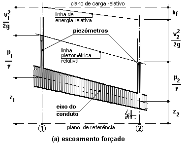

Teorema de Bernoulli para fluídos reais
A experiência do Teorema de Bernoulli para fluídos reais (naturais) se afastam do modelo
perfeito, pois a viscosidade e
o atrito externo são as principais responsáveis pela diferença de energia. Por conseqüência das
forças de atrito, o
escoamento ocorre com uma perda de energia, denominado de perda de carga (energia que se dissipa
em forma de calor).
Por isso se introduz na equação de Bernoulli um termo corretivo hf (perda de carga):
$$\frac{V_1^{2}}{2g} + \frac{P_1}{\gamma} + Z_1 = \frac{V_2^{2}}{2g} + \frac{P_2}{\gamma} + Z_2
+ hf$$
Sendo assim, neste caso o teorema de BERNOULLI considera que “para um escoamento contínuo e
permanente, a carga total de
energia, em qualquer ponto de uma linha de corrente é igual a carga total em qualquer ponto a
juzante da mesma linha de
corrente, mais a perda de carga entre os dois pontos”.

Demonstração de teorema de Bernoulli para fluídos reais.